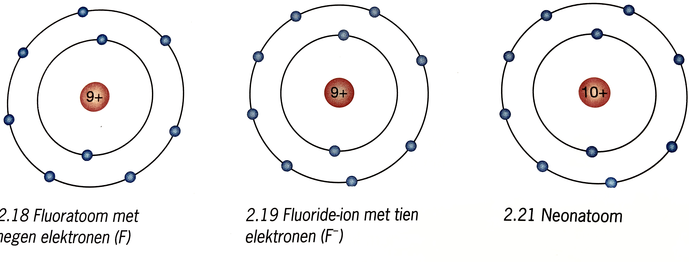

Je kunt beschrijven wat biologie is en uitleggen op welke gebieden de biologie een rol speelt.
Je kunt de levenscyclus van dieren beschrijven.
Je kunt de organisatieniveaus van de biologie benoemen en uitleggen dat op elk hoger organisatieniveau emergente eigenschappen ontstaan.
